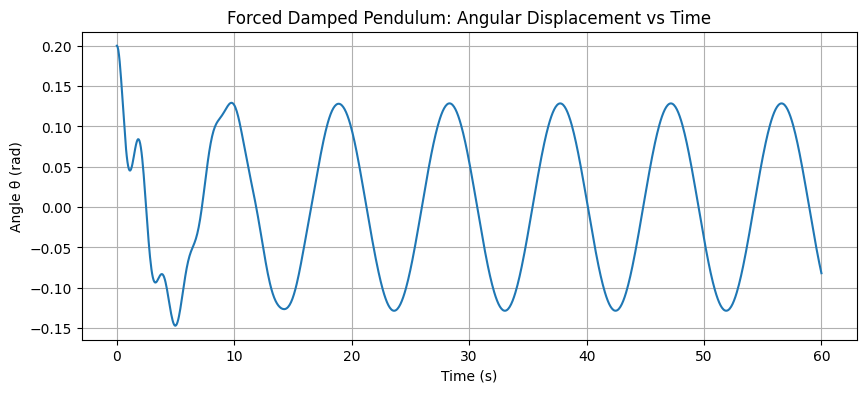
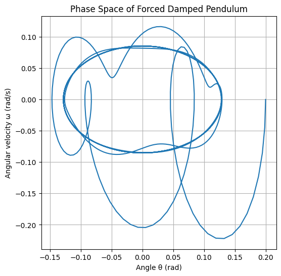
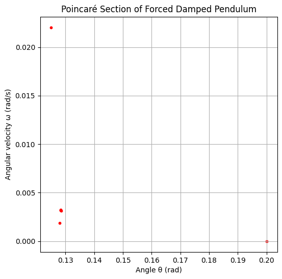

Problem 2
Solution for Problem 2: Dynamics of a Forced Damped Pendulum
1. Theoretical Foundation
Differential Equation
The motion of a forced damped pendulum is governed by the nonlinear differential equation:
\[
\frac{d^2 \theta}{dt^2} + b \frac{d\theta}{dt} + \frac{g}{L} \sin \theta = A \cos(\omega t)
\]
where
- \(\theta(t)\): angular displacement,
- \(b\): damping coefficient,
- \(g\): acceleration due to gravity,
- \(L\): length of the pendulum,
- \(A\): amplitude of external driving torque,
- \(\omega\): angular frequency of driving force.
Small-Angle Approximation
For small oscillations, \(\sin \theta \approx \theta\). The equation becomes linear:
\[
\frac{d^2 \theta}{dt^2} + b \frac{d\theta}{dt} + \frac{g}{L} \theta = A \cos(\omega t)
\]
Homogeneous Solution (No Driving Force)
The characteristic equation:
\[
r^2 + b r + \frac{g}{L} = 0
\]
Solutions:
\[
r = \frac{-b \pm \sqrt{b^2 - 4 \frac{g}{L}}}{2}
\]
- Underdamped (\(b^2 < 4g/L\)): Oscillatory decay.
- Overdamped (\(b^2 > 4g/L\)): Exponential decay without oscillation.
- Critically damped (\(b^2 = 4g/L\)).
Particular Solution (Steady-State Forced Response)
Assuming steady-state solution of form:
\[
\theta_p = \Theta \cos(\omega t - \delta)
\]
Plug into differential equation and solve for amplitude \(\Theta\):
\[
\Theta = \frac{A}{\sqrt{\left(\frac{g}{L} - \omega^2\right)^2 + b^2 \omega^2}}
\]
Phase lag \(\delta\) satisfies:
\[
\tan \delta = \frac{b \omega}{\frac{g}{L} - \omega^2}
\]
Resonance Condition
Resonance approximately occurs when the driving frequency matches the natural frequency of the system (undamped):
\[
\omega_0 = \sqrt{\frac{g}{L}}
\]
The presence of damping \(b\) shifts and broadens the resonance peak.
2. Analysis of Dynamics
- Damping \(b\): Increasing damping reduces amplitude, broadens resonance peak, and suppresses chaos.
- Driving amplitude \(A\): Larger amplitudes can push the system into nonlinear and chaotic regimes.
- Driving frequency \(\omega\): Changes in frequency cause resonance effects; near \(\omega_0\), amplitude peaks.
- Nonlinearity (\(\sin \theta\)): For large \(\theta\), the system exhibits complex dynamics including period doubling and chaos.
3. Practical Applications
- Energy Harvesting: Mechanical oscillators capturing ambient vibrations often modeled as forced damped pendulums.
- Suspension Bridges: Forced oscillations due to wind or traffic forces modeled similarly to study resonance risks.
- Oscillating Circuits: RLC circuits with external AC sources show analogous behavior.
- Biomechanics: Human gait analyzed with forced oscillator models.
4. Implementation: Python Simulation
We use numerical integration (Runge-Kutta 4th order) to solve the nonlinear ODE.
import numpy as np
import matplotlib.pyplot as plt
from scipy.integrate import solve_ivp
# Parameters
g = 9.81 # m/s^2
L = 1.0 # meters
b = 0.5 # damping coefficient
A = 1.2 # driving amplitude
omega = 2/3 # driving frequency
# System of first order ODEs:
# Let y = [theta, omega_theta], where omega_theta = dtheta/dt
def forced_damped_pendulum(t, y):
theta, omega_theta = y
dtheta_dt = omega_theta
domega_dt = -b * omega_theta - (g/L) * np.sin(theta) + A * np.cos(omega * t)
return [dtheta_dt, domega_dt]
# Time span
t_span = (0, 60)
t_eval = np.linspace(*t_span, 1000)
# Initial conditions: theta=0.2 rad, omega=0
y0 = [0.2, 0.0]
# Solve ODE
sol = solve_ivp(forced_damped_pendulum, t_span, y0, t_eval=t_eval, method='RK45')
# Plot angular displacement over time
plt.figure(figsize=(10,4))
plt.plot(sol.t, sol.y[0])
plt.title("Forced Damped Pendulum: Angular Displacement vs Time")
plt.xlabel("Time (s)")
plt.ylabel("Angle θ (rad)")
plt.grid(True)
plt.show()
# Phase space plot (θ vs ω)
plt.figure(figsize=(6,6))
plt.plot(sol.y[0], sol.y[1])
plt.title("Phase Space of Forced Damped Pendulum")
plt.xlabel("Angle θ (rad)")
plt.ylabel("Angular velocity ω (rad/s)")
plt.grid(True)
plt.show()
 
5. Extending the Analysis: Poincaré Section
To analyze transitions to chaos, sample the system at driving period intervals \(T = \frac{2\pi}{\omega}\):
T = 2 * np.pi / omega
poincare_times = np.arange(0, t_span[1], T)
# Interpolate solution at Poincare times
theta_poincare = np.interp(poincare_times, sol.t, sol.y[0])
omega_poincare = np.interp(poincare_times, sol.t, sol.y[1])
plt.figure(figsize=(6,6))
plt.scatter(theta_poincare, omega_poincare, s=10, color='red')
plt.title("Poincaré Section of Forced Damped Pendulum")
plt.xlabel("Angle θ (rad)")
plt.ylabel("Angular velocity ω (rad/s)")
plt.grid(True)
plt.show()

6. Discussion on Limitations and Extensions
- Nonlinearity: Full nonlinear \(\sin \theta\) model necessary for large oscillations.
- Numerical Sensitivity: Chaotic regimes require fine resolution and careful numerical methods.
- Extensions: Introduce nonlinear damping, non-periodic forcing, or coupling multiple pendulums.
- Physical factors: Air resistance, structural flex, and other real-world factors not included here.
Summary
- Derived and analyzed forced damped pendulum equations.
- Explored approximate linear solutions and resonance.
- Created computational models to simulate and visualize behavior.
- Used phase space and Poincaré sections to identify chaotic transitions.
- Discussed real-world relevance and possible extensions.